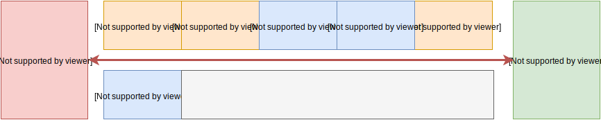
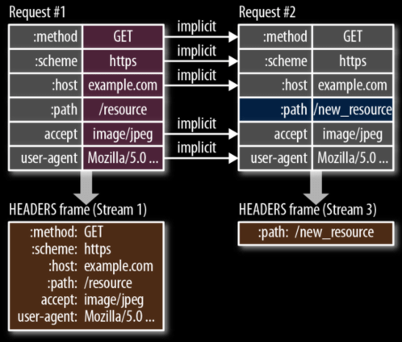
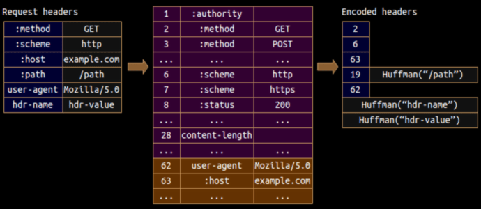

/notes
/notes/films
/notes/films/pinned
http://localhost:5000/notes?limit=10&sortBy=name
⇡ ⇡ ⇡ ⇡ ⇡
scheme host port path query
POST /notes HTTP/1.1
Accept: application/json
Accept-Encoding: gzip, deflate
Content-Type: application/json; charset=utf-8
Host: localhost:8080
User-Agent: HTTPie/0.9.3
{
"name": "films",
"text": "Films to watch"
}
HTTP/1.1 200 OK
Content-Length: 67
Content-Type: application/json; charset=utf-8
Date: Wed, 16 Mar 2016 14:32:18 GMT
X-Powered-By: Express
{
"createdAt": 1458138738899,
"name": "films",
"text": "Films to watch"
}
GET получение ресурса
POST создание ресурса
DELETE удаление ресурса
200 Ok
201 Created
204 No content
301 Moved Permanently
304 Not modified
400 Bad request
403 Forbidden
404 Not found
500 Internal Server Error
504 Gateway Timeout
Сам не хранит состояние клиента между запросами, всё состояние целиком описывается в каждом запросе
GET /notes/films HTTP/1.1
Accept-Encoding: gzip, deflate
HTTP/1.1 200 OK
Content-Encoding: gzip
HTTP/1.1 200 OK
Cache-Control: public, max-age=31536000, no-cache
| private | Закешируй только у конечного клиента (в браузере) |
| public | Закешируй и на промежуточных серверах (на CDN) |
| max-age | Закешируй на указанное количество секунд |
| no-cache | Кешируй, но каждый раз проверяй не изменился ли ресурс |
| no-store | Не кешируй ресурс |
HTTP/1.1 200 OK
Cache-Control: public, max-age=31536000, no-cache
ETag: d1d3c5c4cdb2568785ba1a366b7fb048
GET /index.css HTTP/1.1
If-None-Match: d1d3c5c4cdb2568785ba1a366b7fb048
HTTP/1.1 304 Not Modified
HTTP/1.1 200 OK
Cache-Control: public, max-age=31536000, no-cache
Last-modified: Wed, 15 Nov 1995 04:58:08 GMT
GET /index.css HTTP/1.1
If-Modified-Since: Wed, 15 Nov 1995 04:58:08 GMT
HTTP/1.1 304 Not Modified
Бинарный
Меньше размер пакета
Разделение запроса на фреймы
Потоки



Устраняется дублирование
Ещё меньший размер пакета
What Web Developer Should Know About HTTP
K. Scott Allen
HTTP The Definitive Guide
David Gourley
HTTP caching
Ilya Grigorik
Notes.find(name)
⇡ ⇡
method arguments
{
"jsonrpc": "2.0",
"id": 1,
"method": "findNote",
"params": ["films"]
}
{
"jsonrpc": "2.0",
"id": 1,
"result": {
"name": "films",
"text": "..."
}
}REpresentational State Transfer
GET /notes/films HTTP/1.1
HTTP/1.1 200 Ok
Content-Type: application/json
{
"name": "films",
"text": "..."
}
type Note {
name: String!
text: String
}
type Query {
note(name: String!): Note
}
POST /graphql HTTP/1.1
Content-Type: application/json
{
"query": "query note(name: $name) { name, text }",
"variables": { "name": "films" }
}
HTTP/1.1 200 Ok
Content-Type: application/json
{
"data": { "name": "films", "text": "..." },
"errors": [ ... ]
}
service NotesService {
rpc Find (NoteIdRequest) returns (Note) {}
}
message Note {
string name = 1;
string text = 2;
}
message NoteIdRequest {
string name = 1;
}
const NotesService = grpc.load('notes.proto').notes;
const client = new NotesService('localhost:50051');
client.find({ name: 'films' }, (error, note) => {});
const socket = new WebSocket('ws://localhost:8080');
socket.send(JSON.stringify({
id: '1',
method: 'findNote',
params: ['films']
});
socket.onmessage = message => {
const { id, method, params } = JSON.parse(message);
// ...
socket.send({ id, result });
});
Архитектурный стиль, позволяющий сделать сетевое взаимодействие удобнее, прозрачнее и стандартизованнее
Рой Филдинг
Architectural Styles and the Design of Network-based Software Architectures
REST определяет понятия (ресурсы, представление для ресурсов, индентификатор ресурсов)
И требования к взаимодействию (кеширование, связанность)
http подходит как нельзя лучше
Правила, которые не входят в REST,
но являются best practices
Use path, not query
/api?type=notes&id=films
/notes/filmsUse plurals, not singles
/note/films
/notes/filmsUse only nouns, not verbs
POST /notes/add
POST /notesAvoid verbiage, use plurals
/note_list
/notesUse lowercase
/pullRequests
/pull-requestsUse nesting
/comments?note_id=films
/notes/films/commentsПолучает состояние ресурса в одном из представлений (JSON, XML, HTML)
GET /notes
GET /notes/films
GET /notes/films/pinned
GET /notes?limit=10
200 Ok
404 Not found
400 Bad request /notes?limit=muahahahaСоздаёт новый ресурс с начальным состоянием, когда мы не знаем его ID
POST /notes
201 Created
409 Conflict
Создаёт новый ресурс с начальным состоянием, когда мы знаем его ID
PUT /notes/films
PUT /notes/films/pinned
200 Ok
204 No content
Обновляет состояние существующего ресурса целиком
PUT /notes/films
PUT /notes/films/pinned
200 Ok
204 No content
404 Not found
Удаляет существующий ресурс
DELETE /notes/films
DELETE /notes/films/pinned
200 Ok
204 No content
404 Not found
Обновляет состояние существующего ресурса частично
PATCH /notes/films
200 Ok
204 No content
404 Not found
Запрашивает заголовки, чтобы проверить существование ресурса
HEAD /notes/films
200 Ok
404 Not found
Запрашивает правила взаимодействия, например, доступные методы
OPTIONS /search
204 No content
Allow: OPTIONS, GET, HEAD
POST /search
405 Method not allowed
Один и тот же запрос приводит к одному и тому же состоянию
GET – да (безопасный)
OPTIONS – да (безопасный)
HEAD – да (безопасный)
POST – нет
PUT – да
DELETE – да
PATCH – нет
Связанность
POST /notes HTTP/1.1
Accept: application/json
Accept-Encoding: gzip, deflate
Host: localhost:5000
{
"name": "films",
"text": "..."
}
HTTP/1.1 201 Created
Location: /notes/films
GET / HTTP/1.1
Host: api.github.com
HTTP/1.1 200 Ok
{
current_user_url: "https://api.github.com/user",
gists_url: "https://api.github.com/gists{/gist_id}"
}
GET /notes HTTP/1.1
HTTP/1.1 200 Ok
Accept: application/hal+json
{
"notes": [
{ "name": "films" },
{ "name": "games" }
],
"_links": {
"self": { "href": "/notes" },
"next": { "href": "/notes?page=2" },
"find": { "href": "/notes/{?id}", "templated": true }
}
}Web API Design
Brian Mulloy
const xhr = new XMLHttpRequest();
xhr.open('GET', '/notes');
xhr.send();
xhr.abort();xhr.onreadystatechange = () => {
if (xhr.readyState !== 4) {
return;
}
if (xhr.status === 200) {
console.log(xhr.responseText);
}
}
UNSENT 0 начальное состояние
OPENED 1 вызван open
HEADERS_RECEIVED 2 получены заголовки
LOADING 3 загружается тело
DONE 4 запрос завершён
0 → 1 → 2 → 3 → … → 3 → 4
xhr.setRequestHeader('Content-Type', 'application/json');
xhr.getResponseHeader('Content-Type'); // text/html
xhr.timeout = 30000; // 30s
xhr.ontimeout = () => {
console.log('Try again later');
}
<form name="notes">
<input name="name">
<input name="text">
</form>
const xhr = new XMLHttpRequest();
const formData = new FormData(document.forms.notes);
formData.append('hiddenField', 'hiddenValue');
xhr.open('POST', '/notes');
xhr.send(formData);
<form name="notes">
<input name="name">
<input name="text">
<input type="file">
</form>const xhr = new XMLHttpRequest();
const notes = document.forms.notes;
const formData = new FormData(notes);
formData.append('file', notes.elements[3].file[0]);
xhr.open('POST', '/notes');
xhr.send(formData);
xhr.onprogress = event => { // Every 50 ms
console.log(event.loaded); // Bytes
console.log(event.total); // Content-Length || 0
};
Механизм ограничения доступа к ресурсам одного источника (origin) при запросах с другого
origin = scheme + host + port
GET, POST, HEAD, DELETE
Accept
Accept-Language
Content-Language
Content-Type
Cookie
GET /notes HTTP/1.1
Host: awesomenotes.com
Origin: http://notesdashboard.ru
HTTP/1.1 200 Ok
Content-Type: text/html
Access-Control-Allow-Origin: http://notesdashboard.ru
HTTP/1.1 200 Ok
Content-Type: text/html
Access-Control-Allow-Origin: *
PUT /notes/films HTTP/1.1
Host: awesomenotes.com
Origin: http://notesdashboard.ru
OPTIONS /notes/films HTTP/1.1
Host: awesomenotes.com
Access-Control-Request-Method: PUT
Access-Control-Request-Headers: accept-encoding
HTTP/1.1 204 No content
Access-Control-Allow-Methods: PUT
Access-Control-Allow-Headers: accept-language, origin, accept-encoding
Access-Control-Max-Age: 60000
PUT /notes/films HTTP/1.1
Host: awesomenotes.com
Origin: http://notesdashboard.ru
const promise = fetch(url[, options]);
{
methtod: 'POST',
headers: {
'Accept': 'application/json'
},
body: new FormData(),
mode: 'same-origin', // cors, no-cors
cache: 'no-cache'
}
fetch('/notes')
.then(response => {
response.headers.get('Content-Type'); // application/json
response.status; // 200
return response.json();
})
.then(notes => {
console.info(notes);
})
.catch(error => {
console.error(error);
});
Нет удобной возможности следить за прогрессом
Возможность отменить запрос
есть не во всех браузерах
Протокол полнодуплексной связи поверх TCP-соединения
const express = require('express');
const http = require('http');
const ws = require('ws');
const requestHandler = express();
const httpServer = http.Server(requestHandler);
const websocketServer = new ws.Server({ server: httpServer });
websocketServer.on('connection', socket => {
socket.send('Hello, Client!');
});
httpServer.listen(8080);
const socket = new WebSocket('ws://localhost:8080/socket');
socket.onmessage = messageEvent => {
console.log(messageEvent.data); // Hello, Client!
};
socket.onopen = () => {
socket.send('Hello, Server!');
};
websocketServer.on('connection', socket => {
socket.send('Hello, Client!');
socket.on('message', message => {
console.log(message);
});
});
socket.onopen = () => {
socket.send(document.forms[0].elements[0].files[0]);
};
socket.on('message', message => {
if (message instanceof Buffer) {
// ...
}
});
Инициализация начинается с обычного HTTP GET запроса
GET /socket HTTP/1.1
Connection: Upgrade
Upgrade: websocket
HTTP/1.1 101 Switching Protocols
Connection: Upgrade
Upgrade: websocket
GET /socket HTTP/1.1
Connection: Upgrade
Upgrade: websocket
Sec-WebSocket-Version: 13
Sec-WebSocket-Key: HjqL8dt/Sx6poK1PwQbtkg=
Sec-WebSocket-Extensions: permessage-deflate
HTTP/1.1 101 Switching Protocols
Connection: Upgrade
Upgrade: websocket
Sec-WebSocket-Accept: IffTcaXvslUQ/19cSA4qNIUjHJc=
Подвержен проблеме Head-of-Line Blocking
Необходимо на уровне приложения реализовывать кеширование и другие механизмы, которые в HTTP есть из коробки
HTTP оптимизирован для коротких периодических сессий, и как следствие вся инфраструктура вокруг: сервера, прокси-сервера, балансеры
location /socket {
...
proxy_http_version 1.1;
proxy_set_header Upgrade websocket;
proxy_set_header Connection upgrade;
proxy_read_timeout 3600;
proxy_send_timeout 3600;
}
High Performance Browser Networking
Ilya Grigorik